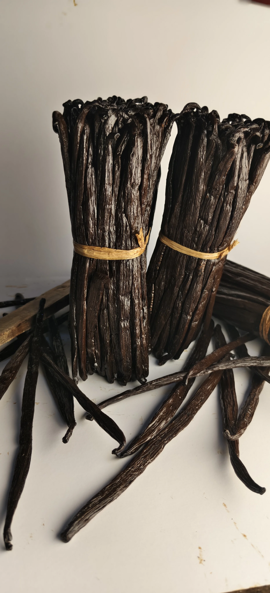
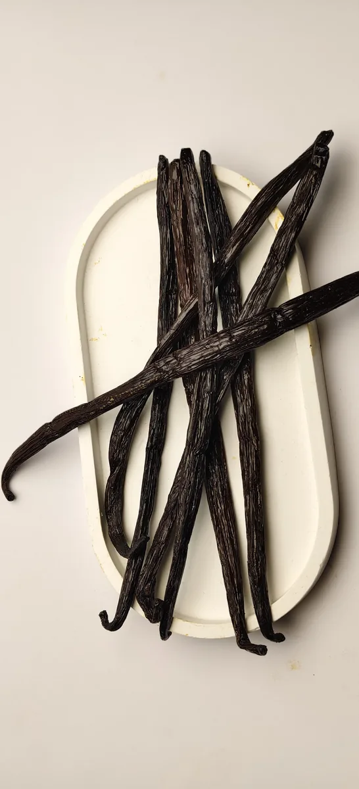

La région SAVA : berceau de la vanille bourbon
Découvrez pourquoi le nord-est de Madagascar produit la vanille la plus recherchée au monde, et comment nos producteurs travaillent la terre depuis des générations.
Découvrez nos articles sur la culture de la vanille, les recettes, les tendances du marché et les secrets des producteurs malgaches.

Découvrez pourquoi le nord-est de Madagascar produit la vanille la plus recherchée au monde, et comment nos producteurs travaillent la terre depuis des générations.

Température, lumière, humidité… nos conseils pour préserver l'arôme de vos gousses pendant plusieurs mois, sans réfrigérateur.

Grade TK, maturité, profil aromatique… tout ce que vous devez savoir pour choisir la bonne gousse selon votre usage professionnel.